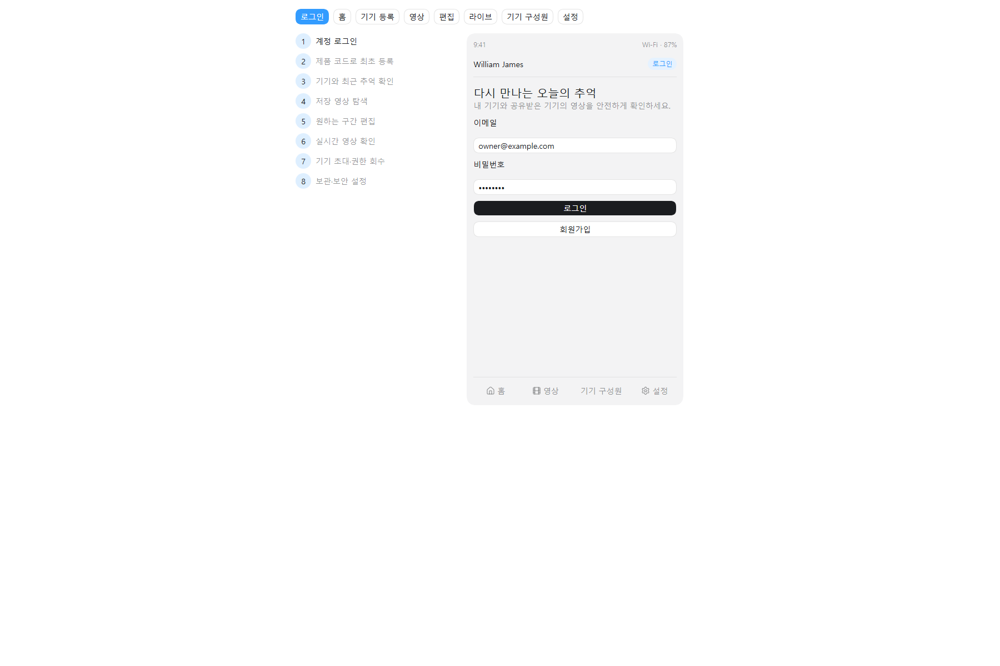

꼭 완벽하게가 아니라, 팀원들이 흩어져서 서로 안 기다리고 동시에 출발할 수 있을 만큼만.
| 명세서 | 이 페이지의 역할 | 원본 산출물 |
|---|---|---|
| 요구사항 정의서 | 시연 시나리오 기준 우선순위(상·중·하)와 직무 태그를 붙인 한 눈에 보는 표 | 01_요구사항_명세서.md (FR/NFR ID·인수 기준) |
| ERD | 필수 테이블·PK·FK·관계를 표로 확정 | 03_ERD_데이터사전.md · schema.sql · FigJam ERD |
| API 명세서 | 전체 엔드포인트 목록 + 핵심 API의 5단 구성(URL·Request·예시·Response·예시) | openapi.yaml · API 문서 페이지 · examples.http · MQTT 계약 |
| 목업 | 8개 핵심 화면과 화면 상태 목록 | Figma 와이어프레임 · 클릭형 HTML |
| 유저 플로우 | 목업 화면에 화살표를 얹은 화면 흐름 합의 | 14_화면_API_매핑.md |
| + 온디바이스 계약 | FE·BE 계약에 가려지기 쉬운 AI·IoT 몫을 계약 포인트로 명시 | mqtt-contract.md · 05_하드웨어 · 04_아키텍처 |
분업 단위이자 진척도 체크리스트 · [대상]은 [목적]하기 위하여 [기능]할 수 있다
| 번호 | 기능명 | 요구사항명 [대상]·[목적]·[기능] | 담당 | MVP | 우선순위 | 화면 | 비고 |
|---|---|---|---|---|---|---|---|
| REQ-01 | 회원가입·로그인 | [사용자]는 [서비스에 안전하게 접근]하기 위하여 [이메일 회원가입·로그인·로그아웃·토큰 재발급]을 할 수 있다. | FEBE | 기본 | 상 | 로그인 | FR-B-001 |
| REQ-02 | 순환 버퍼 녹화 | [기기]는 [이미 지나간 순간을 복원]하기 위하여 [최근 2분 이상 영상을 순환 버퍼로 유지]할 수 있다. | IoT | 기본 | 상 | — (기기) | FR-B-002 |
| REQ-03 | 웃음 감지 자동 저장 | [기기]는 [놓친 웃음 순간을 보존]하기 위하여 [웃음 확정 시 T−60초~T+60초 영상을 생성]할 수 있다. | AIIoT | 기본 | 상 | — (기기) | FR-B-003 · YAMNet |
| REQ-04 | 호출어·터치 저장 | [사용자]는 [방금 지나간 장면을 저장]하기 위하여 ["헤이 제임스" 호출 또는 터치로 T−120초~T 영상을 생성]할 수 있다. | AIIoT | 기본 | 상 | — (기기) | FR-B-004 · 터치는 호출어와 독립 동작 |
| REQ-05 | 반복 웃음 병합 | [기기]는 [중복 영상 생성을 방지]하기 위하여 [병합 구간 안의 반복 웃음을 하나의 이벤트로 묶을] 수 있다. | IoTBE | 기본 | 중 | — (기기) | FR-B-005 |
| REQ-06 | 서명 URL 업로드 | [기기]는 [영상을 안전하게 보관]하기 위하여 [서명 URL로 비공개 저장소에 직접 업로드하고 완료를 통지]할 수 있다. | BEIoT | 기본 | 상 | — (기기) | FR-B-006 · 멱등 처리 |
| REQ-07 | 영상 목록·상세 | [사용자]는 [보존된 추억을 찾기] 위하여 [권한 있는 영상의 목록과 상세를 조회]할 수 있다. | FEBE | 기본 | 상 | 영상 목록 | FR-B-007 · 기간·유형 필터 |
| REQ-08 | 영상 재생 | [사용자]는 [추억을 확인]하기 위하여 [권한 검사 후 발급된 단기 URL로 영상을 재생]할 수 있다. | FEBE | 기본 | 상 | 영상 목록 | play-url API |
| REQ-09 | 구간 편집 | [사용자]는 [원하는 순간만 남기기] 위하여 [시작·종료 시각을 선택해 새 편집본을 생성]할 수 있다. | FEBE | 기본 | 상 | 영상 편집 | FR-B-008 · 시연 피날레 |
| REQ-10 | 영상 관리 | [사용자]는 [영상을 정리]하기 위하여 [이름 변경·즐겨찾기·삭제·정렬·필터]를 할 수 있다. | FEBE | 기본 | 중 | 영상 목록 | FR-B-009 |
| REQ-11 | 다운로드 | [사용자]는 [추억을 소장]하기 위하여 [권한 검사 후 단기 URL로 영상을 다운로드]할 수 있다. | FEBE | 기본 | 상 | 영상 목록 | FR-B-010 · 시연 피날레 |
| REQ-12 | 홈 대시보드 | [사용자]는 [기기·영상 현황을 한눈에 파악]하기 위하여 [기기 상태·최근 영상·저장 수를 대시보드에서 확인]할 수 있다. | FEBE | 기본 | 상 | 홈 대시보드 | FR-B-011 |
| REQ-13 | 실시간 보기 | [사용자]는 [지금 잘 녹화되고 있는지 확인]하기 위하여 [접근 권한이 있는 기기의 HLS 스트림을 요청 시에만 시작·종료]할 수 있다. | FEBEIoT | 기본 | 상 | 실시간 보기 | FR-B-012 · 시연 도입 장면 · 화면을 띄운 시청자에게만 송출 |
| REQ-14 | 기기 최초 등록 | [사용자]는 [기기 소유자가 되기] 위하여 [제품 코드와 물리적 등록 모드를 함께 확인받아 최초 OWNER로 등록]할 수 있다. | FEBEIoT | 기본 | 상 | 기기 등록 | FR-B-013 · 코드 재사용 불가 |
| REQ-15 | 구성원 초대 | [OWNER]는 [가족·지인과 영상을 공유]하기 위하여 [만료되는 1회용 초대로 기기 MEMBER를 추가]할 수 있다. | FEBE | 기본 | 중 | 구성원 관리 | FR-B-014 |
| REQ-16 | 역할 기반 인가 | [서버]는 [민감한 영상을 보호]하기 위하여 [기기별 OWNER/MEMBER 역할로 모든 보호 기능을 인가]할 수 있다. | BE | 기본 | 상 | — (공통) | FR-B-015 · 사람↔기기 N:N |
| REQ-17 | 권한 회수 | [OWNER]는 [접근을 통제]하기 위하여 [구성원 권한을 즉시 회수]할 수 있다. | FEBE | 기본 | 중 | 구성원 관리 | FR-B-016 |
| REQ-18 | 기기 단위 영상 격리 | [서버]는 [다른 기기 영상 노출을 차단]하기 위하여 [모든 요청에서 영상이 속한 기기의 활성 멤버십을 검증]할 수 있다. | BE | 기본 | 상 | — (공통) | FR-B-017 · 존재 은닉 404 |
| REQ-19 | 웃는 표정 감지 | [기기]는 [소리 없는 웃음도 포착]하기 위하여 [YOLO·MediaPipe로 웃는 표정을 감지]할 수 있다. | AI | 심화 | 하 | — | FR-A-001 |
| REQ-20 | 가변 길이 저장 | [기기]는 [자연스러운 영상을 만들기] 위하여 [웃음 지속·무음·장면 전환으로 가변 길이 영상을 생성]할 수 있다. | AIIoT | 심화 | 하 | — | FR-A-002 |
| REQ-21 | 팬·틸트 카메라 제어 | [사용자]는 [원하는 각도를 잡기] 위하여 [앱에서 2축 팬·틸트 카메라를 제어]할 수 있다. | IoTFE | 심화 | 하 | — | FR-A-003 · 3D 프린팅 프레임 |
| REQ-22 | 2차 콘텐츠 생성 | [사용자]는 [추억을 새로운 형태로 즐기기] 위하여 [저장 영상으로 4컷 만화·텍스트 영상·애니메이션을 생성]할 수 있다. | AIBE | 심화 | 하 | — | FR-A-004 |
| REQ-23 | 저장 공간 최적화 | [서버]는 [저장 비용을 관리]하기 위하여 [썸네일·프리뷰·트랜스코딩·보관 주기·자동 삭제를 운영]할 수 있다. | BE | 심화 | 하 | — | FR-A-005 |
| REQ-24 | 직접 업로드 | [사용자]는 [휴대폰 영상도 함께 관리]하기 위하여 [영상을 직접 업로드]할 수 있다. | FEBE | 심화 | 하 | — | FR-A-006 |
| REQ-25 | 공유 범위 설정 | [사용자]는 [추억을 안전하게 공유]하기 위하여 [동의한 영상의 공유 범위와 기간을 설정]할 수 있다. | FEBE | 심화 | 하 | — | FR-A-007 · 기본 비공개 |
| REQ-26 | 푸시 알림 | [사용자]는 [새 추억을 놓치지 않기] 위하여 [새 영상·초대·기기 이벤트 푸시 알림을 받을] 수 있다. | FEBE | 심화 | 하 | — | FR-A-008 |
인수 기준(측정 가능한 완료 조건)과 비기능 요구사항(NFR)은 01_요구사항_명세서.md의 ID를 그대로 사용한다. ID는 구현·API·테스트·결함 관리에서 변경하지 않는다.
API보다 먼저 확정하기 · 데이터를 어떻게 저장하지? · 필수 테이블만 확정하고 출발, 나머지는 그때 붙인다
device_memberships 한 곳으로만 판단한다.device_id. 멤버십 없는 리소스는 존재를 숨기고 404.| 부모 | 관계 | 자식 | 연결 컬럼 | 의미 |
|---|---|---|---|---|
| users | 1 : N | device_memberships | user_id | 한 사용자가 여러 기기에 참여 |
| devices | 1 : N | device_memberships | device_id | 한 기기를 여러 사용자가 공유 (합쳐서 사용자↔기기 N:N) |
| devices | 1 : N | videos | device_id | 영상은 반드시 한 기기에 속함 (접근 경계) |
| videos | 1 : N | video_edits | source_video_id | 원본 하나에 여러 편집 작업 |
| devices | 1 : N | invitations | device_id | 기기 단위 구성원 초대 |
| users | 1 : N | invitations | inviter_id | OWNER가 초대를 발급 |
| users | 1 : N | auth_sessions | user_id | Refresh Token 세션 |
| devices | 1 : N | device_credentials | device_id | IoT 운영 인증 (사용자 JWT와 분리) |
| devices | 1 : N | access_logs | device_id | 기기별 감사 범위 |
| 컬럼 | 설명 | 타입 | NULL |
|---|---|---|---|
| id PK | 사용자 식별자 | uuid | N |
| 이메일 (정규화, 유일) | varchar(320) | N | |
| password_hash | Argon2id/BCrypt 해시만 저장 | varchar(255) | N |
| display_name | 표시 이름 | varchar(60) | N |
| status | ACTIVE·LOCKED·WITHDRAWN | enum | N |
| token_version | JWT 강제 만료용 버전 | integer | N |
| created_at / updated_at | 생성·수정 시각 | timestamptz | N |
| deleted_at | 소프트 삭제 시각 | timestamptz | Y |
| 컬럼 | 설명 | 타입 | NULL |
|---|---|---|---|
| id PK | 기기 식별자 | uuid | N |
| serial_number | 제조 시 부여, 유일 | varchar(80) | N |
| product_code_hash | 최초 등록 코드의 SHA-256 | char(64) | N |
| product_code_retired_at | 등록 성공 시 기록 → 코드 재사용 불가 | timestamptz | Y |
| name / model | 앱 표시 이름·모델 | varchar(80) | N |
| status | UNCLAIMED·ONLINE·OFFLINE·REVOKED | enum | N |
| retention_days | 영상 기본 보관 일수 (1~3650) | integer | N |
| registration_mode_expires_at | 물리적 등록 모드 만료 시각 | timestamptz | Y |
| claimed_by FK | 최초 OWNER (users) | uuid | Y |
| last_seen_at | heartbeat 기준 마지막 접속 | timestamptz | Y |
| 컬럼 | 설명 | 타입 | NULL |
|---|---|---|---|
| id PK | 멤버십 식별자 | uuid | N |
| device_id FK | 기기 (devices) | uuid | N |
| user_id FK | 사용자 (users) | uuid | N |
| role | OWNER 또는 MEMBER (기기별 역할) | enum | N |
| status | ACTIVE 또는 REVOKED | enum | N |
| joined_at | 가입·초대 수락 시각 | timestamptz | N |
| revoked_at / revoked_by | 권한 회수 추적 | timestamptz·uuid | Y |
UNIQUE(device_id, user_id) · 기기당 활성 OWNER 1명은 부분 유일 인덱스로 보장| 컬럼 | 설명 | 타입 | NULL |
|---|---|---|---|
| id PK | 초대 식별자 | uuid | N |
| device_id FK | 공유할 기기 | uuid | N |
| inviter_id FK | 초대를 발급한 OWNER | uuid | N |
| invitee_email | 초대 대상 이메일 | varchar(320) | N |
| role | MVP는 MEMBER만 허용 (CHECK) | enum | N |
| token_hash | 초대 토큰 SHA-256 (원문 저장 금지) | char(64) | N |
| status | PENDING·ACCEPTED·EXPIRED·REVOKED | enum | N |
| expires_at | 만료 시각 (1회용) | timestamptz | N |
| 컬럼 | 설명 | 타입 | NULL |
|---|---|---|---|
| id PK | 영상 식별자 | uuid | N |
| device_id FK | 접근 경계이자 생성 기기 | uuid | N |
| created_by FK | 업로드·작업 주체 (users) | uuid | Y |
| source_type | IOT_CAPTURE·USER_UPLOAD·EDIT_OUTPUT | enum | N |
| trigger_type | LAUGHTER·WAKE_WORD·TOUCH·MANUAL·EDIT… | enum | N |
| source_event_id | IoT 이벤트 멱등 키 | varchar(100) | Y |
| storage_key | 비공개 객체 키 (URL 저장 금지) | varchar(1024) | N |
| size_bytes / checksum_sha256 | 최대 500 MiB · 무결성 검증 | bigint·char(64) | Y |
| duration_ms | 영상 길이 | bigint | Y |
| captured_start_at / end_at | 촬영 구간 | timestamptz | Y |
| status | 업로드·처리·삭제 상태 | enum | N |
| retention_until | 자동 삭제 기준 | timestamptz | Y |
UNIQUE(device_id, source_event_id) — IoT 재시도에도 중복 영상 금지| 컬럼 | 설명 | 타입 | NULL |
|---|---|---|---|
| id PK | 작업 식별자 | uuid | N |
| device_id FK | 원본 영상에서 확정한 기기 | uuid | N |
| source_video_id FK | 원본 영상 | uuid | N |
| result_video_id FK | 완료된 결과 영상 | uuid | Y |
| requested_by FK | 요청 사용자 | uuid | N |
| start_ms / end_ms | 편집 구간 | bigint | N |
| status | PENDING·PROCESSING·COMPLETED·FAILED·CANCELLED | enum | N |
| error_code | 실패 사유 코드 | varchar(80) | Y |
(video_id, device_id) — 편집 결과는 원본과 같은 기기 보장| 테이블 | 역할 | 핵심 컬럼 |
|---|---|---|
auth_sessions | Refresh Token 세션 (원문이 아닌 SHA-256 해시 저장) | user_id FK · refresh_token_hash · expires_at · revoked_at |
device_credentials | IoT 운영 인증 — 사용자 JWT와 혼용 금지, 기기당 활성 1개 | device_id FK · key_id · credential_type · status |
access_logs | 기기별 접근 감사 로그 (조회는 해당 기기 OWNER만) | device_id FK · actor_user_id · action · outcome · created_at |
실시간 보기 시청자 세션은 TTL 기반 운영 상태라서 영구 테이블로 두지 않는다(인메모리 또는 DB 중 구현 선택). 물리 스키마 전체는 schema.sql, 무결성 규칙·트랜잭션은 03_ERD_데이터사전.md 참조.
프론트와 백엔드가 주고받을 데이터의 약속 · REST API 기준 · 자동 문서는 API 문서 페이지(OpenAPI 3.0.3)
| 카테고리 | Method | URL | 설명 |
|---|---|---|---|
| 계정/인증 FEBE | POST | /api/auth/signup | 회원 가입 |
| POST | /api/auth/login | 로그인 | |
| POST | /api/auth/refresh | 토큰 재발급 | |
| POST | /api/auth/logout | 현재 세션 로그아웃 | |
| 기기 FEBEIoT | GET | /api/devices | 내가 접근할 수 있는 기기 목록 (기기별 내 역할 포함) |
| POST | /api/devices/claim | 최초 기기 등록 → OWNER (물리적 등록 모드 연동) | |
| GET | /api/devices/{deviceId} | 기기 상세 조회 | |
| PATCH | /api/devices/{deviceId} | 기기 설정 수정 (OWNER) | |
| DELETE | /api/devices/{deviceId} | 기기 등록 해제 (OWNER) | |
| GET | /api/devices/{deviceId}/status | 기기 상태 조회 (heartbeat 기반) | |
| 구성원·초대 FEBE | GET | /api/devices/{deviceId}/members | 기기 구성원 목록 |
| DELETE | /api/devices/{deviceId}/members/{membershipId} | 구성원 접근 권한 회수 (OWNER) | |
| GET | /api/devices/{deviceId}/invitations | 기기 초대 목록 | |
| POST | /api/devices/{deviceId}/invitations | 기기 구성원 초대 (OWNER, 1회용·만료) | |
| DELETE | /api/devices/{deviceId}/invitations/{invitationId} | 대기 초대 철회 (OWNER) | |
| POST | /api/invitations/accept | 기기 초대 수락 → MEMBER | |
| 영상 FEBE | GET | /api/videos?deviceId=… | 기기 영상 목록 (필터·키셋 페이지) |
| GET | /api/videos/{videoId} | 영상 상세 조회 | |
| PATCH | /api/videos/{videoId} | 제목·설명·즐겨찾기 수정 | |
| DELETE | /api/videos/{videoId} | 영상 삭제 요청 | |
| POST | /api/videos/{videoId}/play-url | 단기 재생 URL 발급 | |
| POST | /api/videos/{videoId}/download-url | 단기 다운로드 URL 발급 | |
| POST | /api/videos/{videoId}/edits | 영상 구간 편집 요청 (비동기) | |
| GET | /api/video-edits/{editId} | 편집 작업 상태 조회 | |
| 라이브 FEBEIoT | POST | /api/devices/{deviceId}/stream-sessions | 온디맨드 실시간 보기 세션 시작 |
| GET | /api/stream-sessions/{sessionId} | 세션 상태 조회 (READY면 playUrl) | |
| POST | /api/stream-sessions/{sessionId}/heartbeat | 시청자 heartbeat (15초 주기) | |
| DELETE | /api/stream-sessions/{sessionId} | 실시간 보기 정상 종료 | |
| IoT 전용 BEIoT | POST | /api/iot/videos/upload-url | 단기 업로드 URL 발급 (기기 자격 증명, 멱등) |
| POST | /api/iot/videos/complete | 업로드 완료 통지 (서버가 크기·체크섬 검증) | |
| 감사 FEBE | GET | /api/devices/{deviceId}/access-logs | 기기 접근 감사 로그 (OWNER) |
라이브 제어(MQTT START_STREAM / EXTEND_STREAM / STOP_STREAM)는 mqtt-contract.md에 별도 계약으로 고정한다. 아래는 시연 뼈대 API 3개의 5단 상세다. 나머지 전부는 API 문서 페이지에서 같은 형식으로 확인한다.
| HTTP URL | /api/auth/login |
|---|---|
| HTTP Method | POST |
| 상세 설명 | 이메일·비밀번호를 검증하고 access·refresh 토큰을 발급한다. 실패 시 401, 반복 실패에는 시도 제한을 적용한다. |
| key | 설명 | value 타입 | 옵션 | Nullable | 예시 |
|---|---|---|---|---|---|
| 로그인 이메일 | String | 이메일 형식, 최대 320자 | ✕ | owner@example.com | |
| password | 비밀번호 | String | 정책 최소 길이 이상 | ✕ | ******** |
{
"email": "owner@example.com",
"password": "********"
}
| key | 설명 | value 타입 | 옵션 | Nullable | 예시 |
|---|---|---|---|---|---|
| accessToken | 보호 API 호출용 JWT | String | Bearer 헤더에 사용 | ✕ | eyJhbGciOi… |
| refreshToken | 재발급용 토큰 | String | 32~2048자 | ✕ | d41d8cd98f… |
| tokenType | 토큰 타입 | String | enum: Bearer | ✕ | Bearer |
| expiresIn | access 토큰 만료(초) | Integer(int64) | 1 이상 | ✕ | 3600 |
| user | 사용자 요약 (id·email·displayName) | Object | UserSummary | ✕ | — |
{
"accessToken": "eyJhbGciOiJIUzI1NiJ9.…",
"refreshToken": "3f9c1c1e5a2b4d…",
"tokenType": "Bearer",
"expiresIn": 3600,
"user": {
"id": "00000000-0000-0000-0000-000000000001",
"email": "owner@example.com",
"displayName": "테스트 소유자"
}
}
| HTTP URL | /api/devices/{deviceId}/stream-sessions |
|---|---|
| HTTP Method | POST |
| 상세 설명 | 화면을 띄운 사용자에게만 송출하는 온디맨드 시청 세션을 만든다. 평상시에는 스트림이 흐르지 않아 서버 부하가 없다. 활성 멤버십이 없으면 존재 은닉 404. 첫 시청자일 때만 서버가 MQTT로 기기 송출을 시작시키고, 여러 시청자는 기기당 송출 하나를 공유한다. |
| key | 설명 | value 타입 | 옵션 | Nullable | 예시 |
|---|---|---|---|---|---|
본문 없음 — Path의 deviceId와 Authorization 헤더(JWT)만 사용 | |||||
POST /api/devices/00000000-0000-0000-0000-000000000002/stream-sessions
Authorization: Bearer {accessToken}
| key | 설명 | value 타입 | 옵션 | Nullable | 예시 |
|---|---|---|---|---|---|
| sessionId | 시청자 한 명의 세션 ID | String(uuid) | ✕ | …-0007 | |
| streamId | 여러 시청자가 공유하는 송출 ID | String(uuid) | ✕ | …-0009 | |
| status | 세션 상태 | String | PENDING·READY·FAILED·CLOSED·EXPIRED | ✕ | PENDING |
| playUrl | READY일 때만 주는 단기 HLS URL | String(uri) | 저장·재사용 금지 | ◯ | null |
| heartbeatIntervalSeconds | heartbeat 권장 주기 | Integer | enum: 15 | ✕ | 15 |
| viewerExpiresAt | 시청자 TTL (heartbeat로 연장) | LocalDateTime | 생성 시 +45초 | ✕ | …T10:40:45Z |
| edgeHardExpiresAt | 기기 강제 종료 시각 | LocalDateTime | 기본 120초 lease | ✕ | …T10:42:00Z |
{
"sessionId": "00000000-0000-0000-0000-000000000007",
"streamId": "00000000-0000-0000-0000-000000000009",
"deviceId": "00000000-0000-0000-0000-000000000002",
"status": "PENDING",
"playUrl": null,
"heartbeatIntervalSeconds": 15,
"viewerExpiresAt": "2026-07-25T10:40:45Z",
"edgeHardExpiresAt": "2026-07-25T10:42:00Z",
"failureCode": null,
"createdAt": "2026-07-25T10:40:00Z"
}
| HTTP URL | /api/videos/{videoId}/edits |
|---|---|
| HTTP Method | POST |
| 상세 설명 | 시작·종료 구간으로 새 편집본 생성을 요청한다. 서버는 원본 영상의 device_id 멤버십을 검사한 뒤 작업 ID를 2초 이내 반환하고, 실제 처리는 비동기(PENDING→PROCESSING→COMPLETED/FAILED)로 진행한다. |
| key | 설명 | value 타입 | 옵션 | Nullable | 예시 |
|---|---|---|---|---|---|
| startMs | 편집 시작 (밀리초) | Integer(int64) | 0 이상, endMs 미만 | ✕ | 12000 |
| endMs | 편집 종료 (밀리초) | Integer(int64) | 1 이상, 원본 길이 이하 | ✕ | 96000 |
| title | 편집본 제목 | String | 1~120자 | ✕ | 우리 가족 웃음 편집본 |
{
"startMs": 12000,
"endMs": 96000,
"title": "우리 가족 웃음 편집본"
}
| key | 설명 | value 타입 | 옵션 | Nullable | 예시 |
|---|---|---|---|---|---|
| id | 편집 작업 ID | String(uuid) | 상태 조회에 사용 | ✕ | …-0008 |
| deviceId | 원본에서 확정한 기기 ID | String(uuid) | ✕ | …-0002 | |
| sourceVideoId | 원본 영상 ID | String(uuid) | ✕ | …-0003 | |
| resultVideoId | 완료 시 결과 영상 ID | String(uuid) | 완료 전 null | ◯ | null |
| startMs / endMs | 요청 구간 | Integer(int64) | ✕ | 12000 / 96000 | |
| status | 작업 상태 | String | PENDING·PROCESSING·COMPLETED·FAILED·CANCELLED | ✕ | PENDING |
| requestedAt | 요청 시각 | LocalDateTime | ISO-8601 | ✕ | 2026-07-25T10:35:00Z |
{
"id": "00000000-0000-0000-0000-000000000008",
"deviceId": "00000000-0000-0000-0000-000000000002",
"sourceVideoId": "00000000-0000-0000-0000-000000000003",
"resultVideoId": null,
"requestedBy": "00000000-0000-0000-0000-000000000001",
"startMs": 12000,
"endMs": 96000,
"status": "PENDING",
"errorCode": null,
"requestedAt": "2026-07-25T10:35:00Z",
"completedAt": null
}
프론트의 출발점, 서비스의 밑그림 · 화면 상태까지 미리 · TOOL: Figma

편집 원본: Figma 앱 와이어프레임 · 클릭해서 흐름 확인: 로컬 클릭형 와이어프레임
| 화면 | 핵심 확인 사항 | 미리 정의한 화면 상태 |
|---|---|---|
| 로그인 | 이메일 로그인, 회원가입 진입 | 입력 오류 · 자격 증명 오류 · 시도 제한 |
| 홈 대시보드 | 내 기기 목록·선택, 기기별 역할·상태, 최근 영상, 저장 수, 라이브 진입 | 로딩 · 기기 없음(빈 상태) · 기기 오프라인 |
| 기기 등록 | 물리적 등록 모드 안내, 제품 코드·QR, 최초 소유자 등록 | 등록 모드 꺼짐 · 코드 오류·재사용 · 이미 등록됨 |
| 영상 목록 | 감지 유형 필터, 썸네일, 촬영 시각, 길이 | 로딩 · 빈 목록 · 처리 중 · 권한 없음(404) |
| 영상 편집 | 재생, 시작·종료 선택, 선택 길이, 편집본 생성 | PENDING · PROCESSING · COMPLETED · FAILED |
| 실시간 보기 | 온디맨드 시작(수초 대기), HLS 재생, 15초 heartbeat, 정상 종료 | PENDING · READY · CLOSED/EXPIRED(종료 화면) · FAILED(재시도) |
| 기기 구성원 관리 | 선택 기기의 OWNER/MEMBER, 기기 초대, 권한 회수 | MEMBER 제한 안내 · 초대 만료 · 회수 확인 |
| 설정 | 녹화 LED, 보관 기간, 접근 기록, 기기 등록 해제 | OWNER 전용 항목 잠금 · 오프라인 작업 불가 |
모든 영상·설정 화면은 현재 선택한 기기와 그 기기에서의 내 역할(OWNER/MEMBER)을 항상 함께 표시한다 — 사람↔기기 N:N 구조의 화면 규칙.
사용자에 따른 화면의 흐름 · 목업에서 화살표만 추가
화면별 호출 API·성공/오류 상태의 전체 매핑은 14_화면_API_매핑.md에 있다.
명세서 5종은 성격상 FE↔BE 계약이 중심이라, 기기 안에서 벌어지는 일은 여기에 계약으로 명시한다
| 계약 | 내용 (합의된 값) | 담당 | 확정 필요 |
|---|---|---|---|
| 트리거 → 영상 구간 | 웃음(LAUGHTER) 확정 시 T−60초 ~ T+60초 · 호출어/터치(WAKE_WORD/TOUCH)는 T−120초 ~ T · 병합 구간 안의 반복 웃음은 첫 감지 기준 1건 |
AIIoT | YAMNet 웃음 확정 임계값 · 병합 구간 길이(설정값) |
| 순환 버퍼 | 최근 2분 이상을 짧은 세그먼트로 로컬 보관, 보관 시간 초과분 자동 삭제. 30분 연속 녹화 중 임의 시각의 직전 120초 복원 가능해야 함 | IoT | 세그먼트 길이(GOP 2초 기준과 정렬) |
| 업로드 3단계 | upload-url 발급(멱등 키 = source_event_id) → 저장소에 직접 PUT(SHA-256 체크섬 포함) → complete 통지(서버가 HEAD로 검증). 실패 시 백오프 3회 재시도, 재부팅 후 미완료 재처리 |
IoTBE | — |
| 라이브 제어 (MQTT) | 단일 토픽 {env}/wj/v1/devices/{deviceId}/commands · START_STREAM / EXTEND_STREAM / STOP_STREAM · hardExpiresAt 기본 120초 lease, 제어 경로 끊기면 기기가 자체 종료 |
IoTBE | QoS·멱등 처리 세부는 mqtt-contract.md 준수 |
| 미디어 파이프라인 | Jetson 단일 H.264/AAC 인코더 출력을 순환 버퍼와 live publisher에 tee → 미디어 계층이 재인코딩 없이 HLS remux·fan-out(-c copy) |
IoT | 실기기에서 GOP·세그먼트 경계 검증 |
| AI 모델 | 웃음소리 = YAMNet(기본) · 사람 탐지 = YOLO(심화 전제) · 웃는 표정 = MediaPipe(심화). 컨설턴트 피드백에 따라 실기기 구동 가능한 경량화 검증이 필수 | AI | 호출어 엔진(YAMNet vs 별도 Keyword Spotting) 검증 후 확정 |
| 프라이버시 LED | 녹화 중 상시 점등 · 라이브 송출 중 1Hz 점멸. 촬영 중 LED 소등 옵션은 허용하지 않음 | IoT | 실기기 패턴 검증 |
하드웨어 구성·배선은 05_하드웨어_구성_및_배선계획.md, 전체 구성도는 04_시스템_아키텍처.md·FigJam 참조.